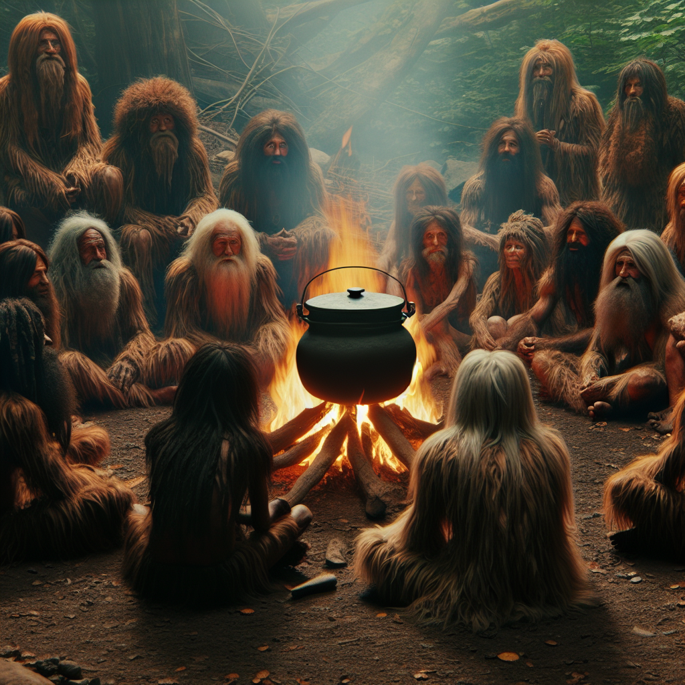

“兽中有异兽，如虎群中的彪，狼群中的狈，狗群中的獒。人中也有异人，方源现在碰到的就是异人中的一种——毛民。“
——gu真人
有关毛民的记载，最早记录于人祖传中。话说，人祖挖下双眼，化为一儿一女。儿子为太日阳莽，女儿为古月阴荒。
而太日阳莽好喝美酒，一次喝出事端，被困在平凡深渊。最后因祸得福，得到菊花样子的名声蛊，逃出生天。
因为有了名声蛊，太日阳莽的名声渐渐大了。很快，世界上就传遍太日阳莽是个大酒鬼的消息。
一天，一群斑虎蜜蜂拖着蜂巢，主动找到太日阳莽。“太日阳莽啊，听说你喜好美酒，一直都说天地四猴的美酒最好喝。但它们酿造的酒，哪里及得上我们的蜜酒呢？今天我们特意带来蜜酒，请您品尝品尝。”
这些蜜蜂一个个都有花豹子一般大小，身上的花纹好似虎纹，黄金打底，黑斑点缀。说话都很客气，但是隐含威胁强迫的意味。
太日阳莽心中叫苦，这叫身在家中做，祸从天上来。斑虎蜜蜂实力强大无比，单单一只，他也不是对手。更何况来了一群呢？
太日阳莽只好勉为其难，尝尝蜂巢中的蜜酒。他刚刚喝下一口，双眼就发亮了。蜜酒甜而不腻，醇香可口，十分好喝，是天地间的绝对佳品！
“好喝，好喝，太好喝啦。这蜜酒喝了，能让人感到自己是天底下最幸福的人！”太日阳莽一口口喝下肚，赞不绝口。
斑虎蜜蜂们都笑了，感到很高兴。首领就问太日阳莽：“那你说，我们的蜜酒和天地四猴的酒相比，谁更好喝一些？”
太日阳莽已经喝得醉醺醺的，忘了斑虎蜜蜂的可怕，直接坦言道：“各有千秋，难有比较。”
斑虎蜜蜂们大怒，自己酿的酒居然和那群死猴子不相上下？这太日阳莽太可恶了，我们得好好教训他！它们正要动手，忽然太日阳莽消失不见。
太日阳莽这一醉，醉了七天七夜。朦朦胧胧中，他听到一个声音在黑暗中呼唤他：“太日阳莽啊，你快醒来。再不醒来，你就要被吃啦……”
太日阳莽惊醒了。他发现自己被五花大绑起来，由一群野人抬着。
这群野人浑身长满了毛，双目幽蓝，已经点燃了篝火，篝火上还架着一个大锅。野人们静静地坐着，说着悦耳动听的话语。

“我们要炼出永生蛊，正需要一个人作为药引。结果上天就送来了太日阳莽，真是可喜可贺啊。”
“人是万物之灵，人祖就是灵祖。太日阳莽是他的左眼所化，灵气十足。依我看，这次炼蛊能够成功！”
“快把他投入油锅，我们得到永生蛊，就能永生啦……”
太日阳莽听到这些话，大惊失色，连忙喊叫起来，大力挣扎。但这些野人不为所动。这个时候，太日阳莽的心底又响起之前的那个声音。
“唉，没有用的。这些野人，都是毛民，天地钟爱。与生俱来就有一项才华，能把蛊虫都炼化。”
太日阳莽一时间忘记了险境，好奇地在心底问道：“你是谁？”
那声音答道：“我是神游蛊，只要任何人喝下天地间四种极品美酒，就会在心田里孕育而成。我能让你挪移到任意的地方。”
太日阳莽大喜：“那就请你快出手啊，带我离开这里。”
神游蛊叹息道：“没有用的。只有你喝醉了酒，才能催得动我。你现在神智如此清醒，是不行的。”
太日阳莽恍然大悟：“难怪那次我被困在孤岛，差点被饿死。幸好得到名声蛊，才脱离了平凡深渊。原来是你害的我！”
神游蛊回答道：“唉，人啊，我也不是有意害你的，都是你喝醉了酒后，催动了我的力量。你不要怪我啦，上次你差点被斑虎蜜蜂捉拿，是亏了我你才脱险的。一害一救，咱们算是扯平了。”
太日阳莽也想起斑虎蜜蜂的事情，不再怪罪神游蛊。他被毛民们投入到锅中。大火在锅底炙热地燃烧着，水温渐渐上升。